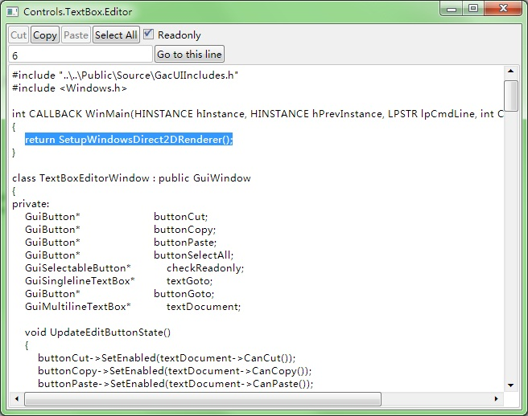

---- GPU Accelerated C++ User Interface |
|||||
| HOME | GETTING START | DEMOS | DOWNLOAD | DOCUMENT | CONTACT |
TextBox.Editor
#include "..\..\Public\Source\GacUIIncludes.h"
#include <Windows.h>
int CALLBACK WinMain(HINSTANCE hInstance, HINSTANCE hPrevInstance, LPSTR lpCmdLine, int CmdShow)
{
return SetupWindowsDirect2DRenderer();
}
class TextBoxEditorWindow : public GuiWindow
{
private:
GuiButton* buttonCut;
GuiButton* buttonCopy;
GuiButton* buttonPaste;
GuiButton* buttonSelectAll;
GuiSelectableButton* checkReadonly;
GuiSinglelineTextBox* textGoto;
GuiButton* buttonGoto;
GuiMultilineTextBox* textDocument;
void UpdateEditButtonState()
{
buttonCut->SetEnabled(textDocument->CanCut());
buttonCopy->SetEnabled(textDocument->CanCopy());
buttonPaste->SetEnabled(textDocument->CanPaste());
}
// ensure that the buttonGoto is enabled only when textGoto's content is a positive number
void UpdateGotoButtonState()
{
buttonGoto->SetEnabled(utow(wtou(textGoto->GetText()))==textGoto->GetText() && wtou(textGoto->GetText())!=0);
}
// cut text box selection
void buttonCut_OnClicked(GuiGraphicsComposition* sender, GuiEventArgs& arguments)
{
textDocument->Cut();
textDocument->SetFocus();
}
// copy text box selection
void buttonCopy_OnClicked(GuiGraphicsComposition* sender, GuiEventArgs& arguments)
{
textDocument->Copy();
textDocument->SetFocus();
}
// paste text from clipboard
void buttonPaste_OnClicked(GuiGraphicsComposition* sender, GuiEventArgs& arguments)
{
textDocument->Paste();
textDocument->SetFocus();
}
// select all text
void buttonSelectAll_OnClicked(GuiGraphicsComposition* sender, GuiEventArgs& arguments)
{
textDocument->SelectAll();
textDocument->SetFocus();
}
// go to the specified line
void buttonGoto_OnClicked(GuiGraphicsComposition* sender, GuiEventArgs& arguments)
{
int line=wtoi(textGoto->GetText())-1;
textDocument->Select(TextPos(line, 0), TextPos(line, 0));
textDocument->SetFocus();
}
// make the textbox readonly or not readonly
void checkReadonly_OnSelectedChanged(GuiGraphicsComposition* sender, GuiEventArgs& arguments)
{
textDocument->SetReadonly(checkReadonly->GetSelected());
UpdateEditButtonState();
}
// when textGoto changed, disable buttonGoto if the text in the textGoto is failed to pass the validation
void textGoto_TextChanged(GuiGraphicsComposition* sender, GuiEventArgs& arguments)
{
UpdateGotoButtonState();
}
// update the edit buttons when selection changed
void textDocument_SelectionChanged(GuiGraphicsComposition* sender, GuiEventArgs& arguments)
{
UpdateEditButtonState();
}
// update the edit buttons when clipboard changed changed
void window_OnClipboardUpdated(GuiGraphicsComposition* sender, GuiEventArgs& arguments)
{
UpdateEditButtonState();
}
public:
TextBoxEditorWindow()
:GuiWindow(GetCurrentTheme()->CreateWindowStyle())
{
this->SetText(L"Controls.TextBox.Editor");
this->GetContainerComposition()->SetMinSizeLimitation(GuiGraphicsComposition::LimitToElementAndChildren);
this->ClipboardUpdated.AttachMethod(this, &TextBoxEditorWindow::window_OnClipboardUpdated);
GuiTableComposition* table=new GuiTableComposition;
table->SetAlignmentToParent(Margin(0, 0, 0, 0));
table->SetCellPadding(2);
table->SetRowsAndColumns(3, 1);
table->SetRowOption(0, GuiCellOption::MinSizeOption());
table->SetRowOption(1, GuiCellOption::MinSizeOption());
table->SetRowOption(2, GuiCellOption::PercentageOption(1.0));
table->SetColumnOption(0, GuiCellOption::PercentageOption(1.0));
this->GetContainerComposition()->AddChild(table);
{
GuiCellComposition* cell=new GuiCellComposition;
table->AddChild(cell);
cell->SetSite(0, 0, 1, 1);
GuiStackComposition* stack=new GuiStackComposition;
stack->SetMinSizeLimitation(GuiGraphicsComposition::LimitToElementAndChildren);
stack->SetPadding(2);
stack->SetAlignmentToParent(Margin(0, 0, 0, 0));
cell->AddChild(stack);
{
GuiStackItemComposition* item=new GuiStackItemComposition;
stack->AddChild(item);
buttonCut=g::NewButton();
buttonCut->SetText(L"Cut");
buttonCut->GetBoundsComposition()->SetAlignmentToParent(Margin(0, 0, 0, 0));
buttonCut->Clicked.AttachMethod(this, &TextBoxEditorWindow::buttonCut_OnClicked);
item->AddChild(buttonCut->GetBoundsComposition());
}
{
GuiStackItemComposition* item=new GuiStackItemComposition;
stack->AddChild(item);
buttonCopy=g::NewButton();
buttonCopy->SetText(L"Copy");
buttonCopy->GetBoundsComposition()->SetAlignmentToParent(Margin(0, 0, 0, 0));
buttonCopy->Clicked.AttachMethod(this, &TextBoxEditorWindow::buttonCopy_OnClicked);
item->AddChild(buttonCopy->GetBoundsComposition());
}
{
GuiStackItemComposition* item=new GuiStackItemComposition;
stack->AddChild(item);
buttonPaste=g::NewButton();
buttonPaste->SetText(L"Paste");
buttonPaste->GetBoundsComposition()->SetAlignmentToParent(Margin(0, 0, 0, 0));
buttonPaste->Clicked.AttachMethod(this, &TextBoxEditorWindow::buttonPaste_OnClicked);
item->AddChild(buttonPaste->GetBoundsComposition());
}
{
GuiStackItemComposition* item=new GuiStackItemComposition;
stack->AddChild(item);
buttonSelectAll=g::NewButton();
buttonSelectAll->SetText(L"Select All");
buttonSelectAll->GetBoundsComposition()->SetAlignmentToParent(Margin(0, 0, 0, 0));
buttonSelectAll->Clicked.AttachMethod(this, &TextBoxEditorWindow::buttonSelectAll_OnClicked);
item->AddChild(buttonSelectAll->GetBoundsComposition());
}
{
GuiStackItemComposition* item=new GuiStackItemComposition;
stack->AddChild(item);
checkReadonly=g::NewCheckBox();
checkReadonly->SetText(L"Readonly");
checkReadonly->GetBoundsComposition()->SetAlignmentToParent(Margin(0, 0, 0, 0));
checkReadonly->SelectedChanged.AttachMethod(this, &TextBoxEditorWindow::checkReadonly_OnSelectedChanged);
item->AddChild(checkReadonly->GetBoundsComposition());
}
}
{
GuiCellComposition* cell=new GuiCellComposition;
table->AddChild(cell);
cell->SetSite(1, 0, 1, 1);
GuiStackComposition* stack=new GuiStackComposition;
stack->SetMinSizeLimitation(GuiGraphicsComposition::LimitToElementAndChildren);
stack->SetPadding(2);
stack->SetAlignmentToParent(Margin(0, 0, 0, 0));
cell->AddChild(stack);
{
GuiStackItemComposition* item=new GuiStackItemComposition;
stack->AddChild(item);
textGoto=g::NewTextBox();
textGoto->GetBoundsComposition()->SetBounds(Rect(Point(0, 0), Size(180, 0)));
textGoto->GetBoundsComposition()->SetAlignmentToParent(Margin(0, 0, 0, 0));
textGoto->TextChanged.AttachMethod(this, &TextBoxEditorWindow::textGoto_TextChanged);
item->AddChild(textGoto->GetBoundsComposition());
}
{
GuiStackItemComposition* item=new GuiStackItemComposition;
stack->AddChild(item);
buttonGoto=g::NewButton();
buttonGoto->SetText(L"Go to this line");
buttonGoto->GetBoundsComposition()->SetAlignmentToParent(Margin(0, 0, 0, 0));
buttonGoto->Clicked.AttachMethod(this, &TextBoxEditorWindow::buttonGoto_OnClicked);
item->AddChild(buttonGoto->GetBoundsComposition());
}
}
{
GuiCellComposition* cell=new GuiCellComposition;
table->AddChild(cell);
cell->SetSite(2, 0, 1, 1);
textDocument=g::NewMultilineTextBox();
textDocument->GetBoundsComposition()->SetAlignmentToParent(Margin(0, 0, 0, 0));
textDocument->SelectionChanged.AttachMethod(this, &TextBoxEditorWindow::textDocument_SelectionChanged);
cell->AddChild(textDocument->GetBoundsComposition());
}
// make some buttons enabled or disabled appropiately
UpdateEditButtonState();
UpdateGotoButtonState();
// set the preferred minimum client size
this->GetBoundsComposition()->SetPreferredMinSize(Size(640, 480));
// call this to calculate the size immediately if any indirect content in the table changes
// so that the window can calcaulte its correct size before calling the MoveToScreenCenter()
this->ForceCalculateSizeImmediately();
// move to the screen center
this->MoveToScreenCenter();
}
~TextBoxEditorWindow()
{
}
};
void GuiMain()
{
GuiWindow* window=new TextBoxEditorWindow();
GetApplication()->Run(window);
delete window;
}
|
|||||